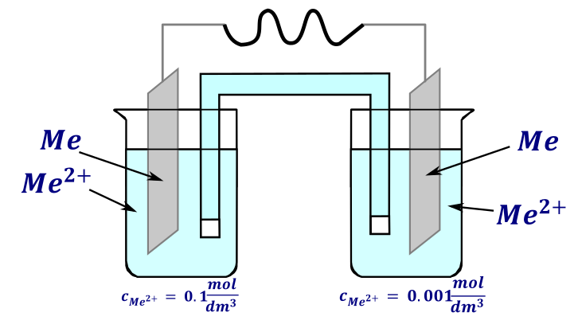
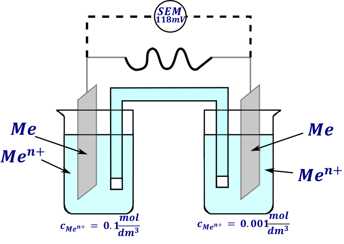

Omawiając obliczenia SEMu stwierdzono, że potencjał rzeczywisty półogniwa może znacznie odbiegać od wartości teoretycznej, czyli potencjału standardowego. Przykładem tego jest słabsze świecenie żarówki zasilanej rozładowaną baterią czy krótszy zasięg pojazdów elektrycznych zimą Dzieje się tak, jeżeli mamy warunki odbiegające od standardowych wartości, a więc gdy stężenia jonów uczestniczących w półreakcji odbiegają od \(1mol*dm^{- 3}\), ciśnienia gazów odbiegają od 1 atmosfery lub temperatura odbiega od 25°C (298K). Rzeczywisty potencjał półogniwa możemy obliczyć stosując równanie Nernsta:
\[E_{\frac{K}{A}} = E_{\frac{K}{A}}^{0} + \frac{RT}{zF}\ln\left( \frac{\lbrack Utl\rbrack}{\lbrack Red\rbrack} \right)\]
W którym występują następujące oznaczenia:
\(z -\)Ilość przepływających elektronów w reakcji połówkowej – w praktyce współczynnik przed elektronami
\(R =\)stała gazowa w jednostkach SI \(8.3145\ \) (Stosujemy jednostki SI i żadnych innych)
\(T =\)temperatura w Kelvinach
\(F =\)stała Faradaya (inaczej jest to ładunek jednego mola elektronów=\(N_{a}q_{e^{-}} = 96\ 485\ \frac{C}{mol}\)
\(\lbrack Utl\rbrack\) - iloczyn stężeń jonów występujących po stronie utlenionej w odpowiednich potęgach
\(\lbrack Red\rbrack\) - iloczyn stężeń po stronie zredukowanej.
Wstawiając wartości \(R = 8.3145,\ F = 96485\) , zakładając że temperatura wynosi 25°C oraz zamieniając logarytm dziesiętny na naturalny dostajemy postać równania, która częściej występuje w zadaniach
\[E_{\frac{K}{A}} = E_{\frac{K}{A}}^{0} + \frac{RT}{zF}\ln\left( \frac{\lbrack Utl\rbrack}{\lbrack Red\rbrack} \right) =^{T = 298K} = E^{0} + \frac{0.059}{z}\log\left( \frac{\lbrack Utl\rbrack}{\lbrack Red\rbrack} \right)\]
Znajomość tego równania nas raczej nie obowiązuje na maturze, gdyż jest poza podstawą programową. Bardzo często występuje ono, jako zadania z informacją wstępną, więc z całą pewnością należy je omówić i wiedzieć jak należy je stosować:
Rozważmy najprostsze zadanie: Oblicz potencjał półogniwa otrzymanego przez zanurzenie blaszki miedzianej w 0.01 molowym roztworze \(CuSO_{4}\) ; Temperatura wynosi 298K.
Stężenie jonów wynosi, tyle co stężenie soli
\[c_{0} = \left\lbrack Cu^{2 +} \right\rbrack = \lbrack SO_{4}^{2 -}\rbrack = 0.01\frac{mol}{dm^{3}}\]
W półogniwie może zachodzić półreakcja:
\[Cu^{2 +} + 2e^{-} \rightleftarrows Cu\]
Dla ciał stałych praktycznie zawsze zamiast stężenia ciał stałych, a więc w tym wypadku za stężenie formy zredukowanej (\(Cu\)) wstawiamy \(1\frac{mol}{dm^{3}}\). Formą utlenioną jest w tym wypadku jon \(Cu^{2 +}\), którego stężenie jest takie samo jak soli \(CuSO_{4}\). Wartość potencjału standardowego \(E_{Cu^{2 +}\text{/}Cu}^{0}\) reakcji elektrodowej odnajdujemy w tablicach Ilość przepływających elektronów wynosi w tym wypadku 2, taka jest wartość współczynnika stechiometrycznego przed elektronami wpółrównaniu. Zapisując wyrażenie na potencjał i wstawiając dane liczbowe dostajemy:
\[E = E^{0} + \frac{0.059}{z}\log\left( \frac{\lbrack Utl\rbrack}{\lbrack Red\rbrack} \right) = 0.342 + \frac{0.059}{2}\log\frac{\left\lbrack Cu^{2 +} \right\rbrack}{1} = \]
\[ 0.342 + \frac{0.059}{2}\log\frac{0.01}{1} = 0.342 + \frac{0.059}{2}* - 2 = 0.283V\]
Jest to półogniwo o najprostszej konstrukcji.
W celu obliczenia SEMu ogniwa, a więc układu składającego się z dwóch półogniw, najpierw obliczamy wartość potencjału rzeczywistego obu półogniw – kolejno ustalamy, które półogniwo jest katodą (to o większym potencjale) a które anodą – o mniejszym potencjale. Dopiero po ustaleniu biegunów półogniw możemy obliczyć SEM przez odjęcie potencjału anody od potencjału katody.
Przykładem jest obliczenie SEMu dla następującego ogniwa, temperatura wynosi 25°C:
\[Zn\left| Zn^{2 +}\left( 0.1\frac{mol}{dm^{3}} \right) \right|\left| Ag^{+}\left( 0.03\frac{mol}{dm^{3}} \right) \right|Ag\]
Zgodnie z konwencją sztokholmską wiemy, iż anoda jest po lewej stronie zapisanego półogniwa, a więc zachodzi tam półrównanie
\[Zn^{2 +} + 2e^{-} \rightarrow Zn\]
Jednocześnie wiemy, że półrównania muszę rozważać jako półrównania redukcji, gdyż potencjał jest zdefiniowany dla redukcji. Dla opisanego półrównania, równanie Nernsta ma postać dla anody ma postać
\[E_{A} = E_{Zn^{2 +}}^{0} + \frac{0.059}{2}\log{\lbrack Zn^{2 +}\rbrack} = - 0.762 + \frac{0.059}{2}\log{0.1} = - 0.7915V\]
Analogicznie dla katody zachodzi półreakcja
\[Ag^{+} + e^{-} \rightarrow Ag\]
A równanie Nernsta ma postać:
\[E_{K} = E_{Ag^{+}}^{0} + \frac{0.059}{1}\log{\left\lbrack Ag^{+} \right\rbrack = 0.800} + \frac{0.059}{1}\log{0.03} = 0.710V\]
Odejmując potencjał rzeczywisty katody i anody dostajemy rzeczywisty SEM układu
\[SEM = E_{K} - E_{A} = 0.710V - - 0.7915V = 1.5015V\]
W równaniu Nernsta zawsze wstawiamy iloczyn/ iloraz wszystkich jonów występujących w półrównaniu reakcji, w odpowiedniej potędze równej współczynnikowi stechiometrycznemu tegoż jonu. Pomijamy jedynie wodę, gdyż stosujemy roztwory wodne, a więc stężenie jej jest stałe. Np. dla półrównania:
\[Cr_{2}O_{7}^{2 -} + 14H^{+} + 6e^{-} \rightarrow 2Cr^{3 +} + 7H_{2}O;\ \ \ T = 298K\]
Równanie Nernsta będzie miało postać
\[E = E^{0} + \frac{0.059}{z}\log\left( \frac{\lbrack Utl\rbrack}{\lbrack Red\rbrack} \right) = E_{Cr_{2}O_{7}^{2 -}\text{/}Cr^{3 +}}^{0} + \frac{0.059}{6}\log\frac{\left\lbrack Cr_{2}O_{7}^{2 -} \right\rbrack\left\lbrack H^{+} \right\rbrack^{14}}{\left\lbrack Cr^{3 +} \right\rbrack^{2}}\]
Widzimy, iż w równaniu Nernsta musimy umieścić wszystkiego reagenty uczestniczące w reakcji , a nie tylko te, które zmieniają stopnie utlenienia. Można wyciągnąć wniosek, iż potencjał niektórych reakcji może silnie zależeć od pH.
Dodatkowo zależność ta jest zwykle liniowa, co można wytłumaczyć przekształcając równanie powyżej:
\[{E = E}_{Cr_{2}O_{7}^{2 -}\text{/}Cr^{3 +}}^{0} + \frac{0.059}{6}\log\frac{\left\lbrack Cr_{2}O_{7}^{2 -} \right\rbrack\left\lbrack H^{+} \right\rbrack^{14}}{\left\lbrack Cr^{3 +} \right\rbrack^{2}} =\]
\[E_{Cr_{2}O_{7}^{2 -}\text{/}Cr^{3 +}}^{0} + \frac{0.059}{6}\log\frac{\left\lbrack Cr_{2}O_{7}^{2 -} \right\rbrack}{\left\lbrack Cr^{3 +} \right\rbrack^{2}} + \frac{0.059}{6}\log\left\lbrack H^{+} \right\rbrack^{14} =\]
\[E_{Cr_{2}O_{7}^{2 -}\text{/}Cr^{3 +}}^{0} + \frac{0.059}{6}\log\frac{\left\lbrack Cr_{2}O_{7}^{2 -} \right\rbrack}{\left\lbrack Cr^{3 +} \right\rbrack^{2}} - - \frac{0.059}{6}{\log\left\lbrack H^{+} \right\rbrack}^{14} =\]
\[E_{Cr_{2}O_{7}^{2 -}\text{/}Cr^{3 +}}^{0} + \frac{0.059}{6}\log\frac{\left\lbrack Cr_{2}O_{7}^{2 -} \right\rbrack}{\left\lbrack Cr^{3 +} \right\rbrack^{2}} - \frac{0.059}{6}{*14*( - \log\left\lbrack H^{+} \right\rbrack}^{\ }) =\]
\[E_{Cr_{2}O_{7}^{2 -}\text{/}Cr^{3 +}}^{0} + \frac{0.059}{6}\log\frac{\left\lbrack Cr_{2}O_{7}^{2 -} \right\rbrack}{\left\lbrack Cr^{3 +} \right\rbrack^{2}} - \frac{0.059}{6}{*14*pH}^{\ }\]
Wyprowadzona zależność tłumaczy różną wartość potencjałów w różnym środowisku. Przykładem zastosowania zależnościjest zadanie: Oblicz potencjał redukcji nadmanganianu do manganu (II) w środowisku: pH=1; pH=7; pH=13 wiedząc, że stężenia wynoszą: \(\left\lbrack MnO_{4}^{-} \right\rbrack = 0.01\ mol \cdot dm^{- 3};\left\lbrack Mn^{2 +} \right\rbrack = 0.001\ mol \cdot dm^{- 3}\) i temperatury \(25{^\circ}C\):.
pH łączy się ze stężeniem jonów \(\lbrack H^{+}\rbrack\) wedle wzoru \(pH = - \log{\lbrack H^{+}\rbrack} \rightleftarrows \left\lbrack H^{+} \right\rbrack = 10^{- pH}\)
Zapisując zachodzącą półreakcję i w wartości stężeń dostajemy:
\[MnO_{4}^{-} + 8H^{+} + 5e^{-} \rightarrow Mn^{2 +} + 4H_{2}O\]
\[\left\lbrack MnO_{4}^{-} \right\rbrack = 0.01\frac{mol}{dm^{3}};\ \ \ \ \left\lbrack Mn^{2 +} \right\rbrack = 0.001\frac{mol}{dm^{3}}\]
Równanie Nernsta dla zachodzącej reakcji ma postać:
\[E = E^{0} + \frac{0.059}{z}\log\left( \frac{\lbrack Utl\rbrack}{\lbrack Red\rbrack} \right) \rightarrow E = E^{0} + \frac{0.059}{5}\log\left( \frac{\left\lbrack MnO_{4}^{-} \right\rbrack\left\lbrack H^{+} \right\rbrack^{8}}{\left\lbrack Mn^{2 +} \right\rbrack} \right)\]
Kolejno możemy wstawić wartości odpowiednich pH, a w zasadzie odpowiadające wartości stężeń jonów \(\left\lbrack H^{+} \right\rbrack\):
\[pH = 1 \rightarrow \left\lbrack H^{+} \right\rbrack = 10^{- 1} = 0.1\frac{mol}{dm^{3}}\]
\[E = 1.507 + \frac{0.059}{5}\log\left( \frac{0.01*(0.1)^{8}}{0.001} \right)\]
\[ = 1.507 + \frac{0.059}{5}\log 10^{- 7} = 1.507 + \frac{0.059}{5}*( - 7) = 1.4244V\]
Dla \(pH = 7 \rightarrow \left\lbrack H^{+} \right\rbrack = 10^{- 7}.\) Wstawiając stężenia do wyrażenia na potencjał:
\[E = 1.507 + \frac{0.059}{5}\log\left( \frac{0.01*\left( 10^{- 7} \right)^{8}}{0.001} \right) =\]
\[ 1.507 + \frac{0.059}{5}\log 10^{- 55} = 1.507 + \frac{0.059}{5}*( - 55) = 0.858V\]
I kolejno dla \(pH = 13 \rightarrow \left\lbrack H^{+} \right\rbrack = 10^{- 13}\), wówczas potencjał wynosi:
\[E = 1.507 + \frac{0.059}{5}\log\left( \frac{0.01*\left( 10^{- 13} \right)^{8}}{0.001} \right) =\]
\[ 1.507 + \frac{0.059}{5}\log 10^{- 109} = 1.507 + \frac{0.059}{5}*( - 109) = 0.2208\]
Obliczenie pH w środowisku zasadowym tłumaczy, dlaczego wówczas dominuje reakcja
\[MnO_{4}^{-} + e^{-} \rightarrow MnO_{4}^{2 -}\]
Ma ona wyższy rzeczywisty potencjał niż półreakcja \(MnO_{4}^{-} + 8H^{+} + 5e^{-} \rightarrow Mn^{2 +} + 4H_{2}O\), a więc wniosek jest taki, że \(MnO_{4}^{-}\) ma najwieksze właściwości utleniające w środowisku kwaśnym (najmniejsze pH)
Dla półogniwa gazowego, zamiast stężenia gazu należy wstawiać \(\frac{p_{gazu}}{p_{0}},\ gdzie\ p_{0} = 1bar = 10^{5}Pa = 10^{3}hPa\ \), natomiast to równanie wydaje się czasem być po za zakresem autorów zadań. Do takich zadań należy podejść taktycznie – w przypadku braku informacji wstępnej zakładamy dla gazów, że jest \(p_{gazu} = 1\) czyli prościej za stężenie gazu wstawiamy jeden. Jednocześnie w duchu komentujemy wiedzę autora zadania.
Natomiast jeżeli informacja wstępna mówi o konieczności wstawiania ciśnienia w wyrażeniu to oczywiście to ciśnienie wstawiamy. Na przykład dla półreakcji
\[2H^{+} + 2e^{-} \rightleftarrows H_{2}\]
Poprawne wyrażenie równania Nernsta ma postać:
\[E_{H_{2}\text{/}H^{+}} = E_{H_{2}\text{/}H^{+}}^{0} + \frac{0.059}{2}\log\frac{\left\lbrack H^{+} \right\rbrack^{2}}{\frac{p_{H_{2}}}{p_{0}}}\]
Natomiast jeżeli informacja nic nie wspomina o zależności potencjału od ciśnienia i jednocześnie o tym ciśnieniu nic nie wiemy, wtedy wstawiamy zamiast \(\frac{p_{H_{2}}}{p_{0}}\) po prostu 1, albo inaczej pomijamy ten człon, co prowadzi do wyrażenia:
\[E_{H_{2}\text{/}H^{+}} = E_{H_{2}\text{/}H^{+}}^{0} + \frac{0.059}{2}\log\left\lbrack H^{+} \right\rbrack^{2}\]
Podsumowując w przypadku półogniw gazowych należy zachować czujność, jeżeli chodzi o ciśnienie gazu, bo z nim może być różnie, a wyrażenie może zależeć od wiedzy układającego zadanie oraz informacji wstępnej.
Pięknym przykładem zastosowania równania Nernsta jest ogniwo stężeniowe. Zbudowane jest ono zawsze dwóch półogniw, które są identyczne, natomiast różnią się jedynie stężeniem reagujących jonów. Uzyskane napięcie wynika wówczas z „chęci” wyrównania stężeń w obu półogniwach. Układ taki musi być połączony kluczem elektrochemicznym, bo inaczej wyrównanie stężeń nastąpi na skutek po prostu wymieszania ich. Mamy, więc te same półrównania, ale inne stężenia. I wbrew pozorom to działa.
Przykładem jest układ:

Wskaż katodę i anodę oraz oblicz SEM oraz napisz w konwencji sztokholmskiej
Zadanie rozpoczynamy od napisania równania Nernsta dla obu półogniw.
\[Me^{2 +} + 2e^{-} \rightarrow Me\ \]
\[E_{lewej} = E_{Me}^{0} + \frac{0.059}{2}\log\left\lbrack Me^{2 +} \right\rbrack = E_{Me}^{0} + \frac{0.059}{2}\log{0.1} = E_{Me}^{0} - 0.0295\]
\[E_{prawe} = E_{Me}^{0} + \frac{0.059}{2}\log\left\lbrack Me^{2 +} \right\rbrack = E_{Me}^{0} + \frac{0.059}{2}\log{0.001} = E_{Me}^{0} - 0.0885\]
Widzę, iż potencjał lewej komory musi być większy, natomiast prawej mniejszy, gdyż odejmuje większą wartość dla prawego półukładu, a potencjał standardowy musi być taki sam dla obu półogniw, bo mamy ten sam metal). Lewe półogniwo jest ma większy potencjał, a więc jest katodą i zachodzi na nim proces redukcji: \(Me^{2 +} + 2e^{-} \rightarrow Me\) natomiast prawe półogniwo jest anodą i zachodzić na nim będzie proces utlenienia: \(Me \rightarrow Me^{2 +} + 2e^{-}\). SEM danego układu najłatwiej jest obliczyć, jako różnice potencjałów katody (lewego półogniwa) i anody (prawego półogniwa):
\[SEM = E_{K} - E_{A} = E_{Me}^{0} - 0.0295 - \left( E_{Me}^{0} - 0.0885 \right) = - 0.0295 + 0.0885 = 0.059V\]
Zapis tego będzie wyglądał w konwecji sztokholmskiej?
\[Me\left| Me^{2 +}\left( c = 0.001\frac{mol}{dm^{3}} \right) \right|\left| Me^{2 +}\left( c = 0.1\frac{mol}{dm^{3}} \right) \right|Me\]
W konwecji sztokholmskiej powinniśmy również zapisywać stężenia w nawiasach, o ile są znane, np. podane w zadaniu
Zauważmy również, że jeżeli masz zbudowane ogniwo stężeniowe, którego znamy SEM oraz stężenia jonów, możemy ustalić, jaki jest ładunek reagującego jonu, a ogólnie ile wynosi ilość przepływających elektronów w procesie elektrodowym. Na przykład w przedstawionym poniżej przykładzie jesteśmy w stanie ustalić ładunek jonu reagującego metalu

Rozpoczynamy od napisania równania Nernsta dla obu półogniw:
\[E_{P} = E_{Me}^{0} + \frac{0.059}{z}log\left\lbrack Me^{z +} \right\rbrack = E_{Me}^{0} + \frac{0.059}{z}log{0.001} = E_{Me}^{0} - \frac{0.177}{z}\]
\[E_{L} = E_{Me}^{0} + \frac{0.059}{z}log\left\lbrack Me^{z +} \right\rbrack = E_{Me}^{0} + \frac{0.059}{z}log{0.1} = E_{Me}^{0} - \frac{0.059}{z}\]
Pierwsze, prawe jest mniejsze, drugie większe (drugiego, lewe półogniwo więc to katoda), zapisujemy wyrażenia na SEM układu i wstawiamy obliczone uprzednio wartości:
\[SEM = E_{L} - E_{p} = E_{Me}^{0} - \frac{0.059}{z} - \left( E_{Me}^{0} - \frac{0.177}{z} \right) = 0.118\]
\[\frac{0.118}{z} = 0.118 \rightarrow z = 1\]
Czyli jest jednododatni jon \(Me^{+}\)
A kiedy na pewno można mieć Nernsta w dupie?? Na poziom matury wtedy, kiedy nie mamy go podanego w treści zadania.
Natomiast ogólnie wtedy, gdy stężenia wszystkich reagujących jonów wynoszą \(1\ mol*dm^{- 3}\), (a ciśnienia dla gazów równe są 1 bar), gdyż wtedy w wyrażeniu iloczynowym dostajemy 1, a jak dobrze wiemy \(\ln 1 = 0\). Powoduje to wyzerowanie całego członu związanego z równaniem Nernsta. Są to tak zwane elektrody standardowe.
\[E = E^{0} + \frac{0.059}{z}\log\left( \frac{\lbrack Utl\rbrack}{\lbrack Red\rbrack} \right) = E^{0} + \frac{0.059}{z}\log 1 = E^{0} + \frac{0.059}{z}*0 = E^{0}\]